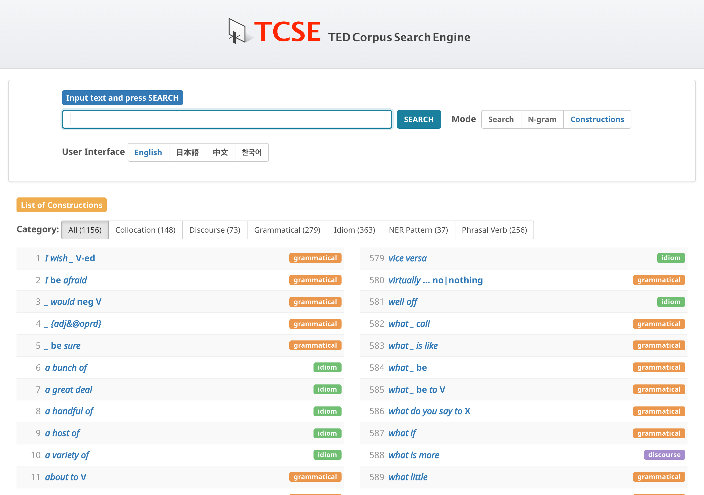
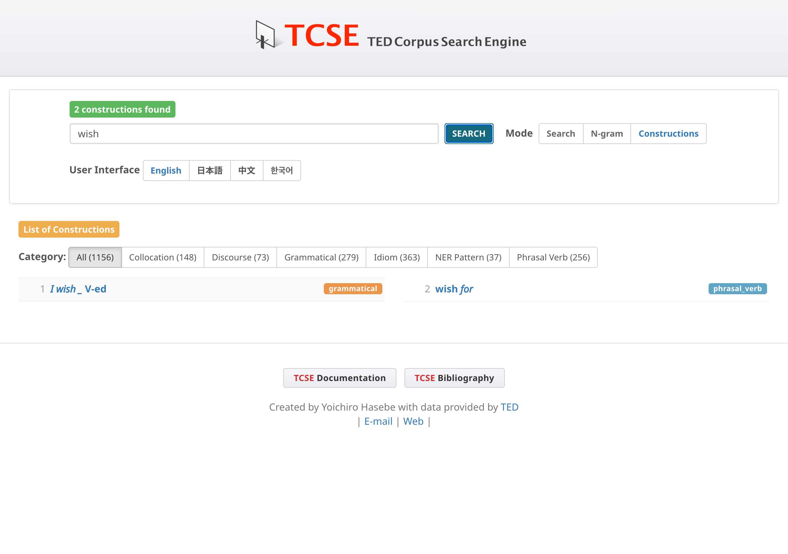
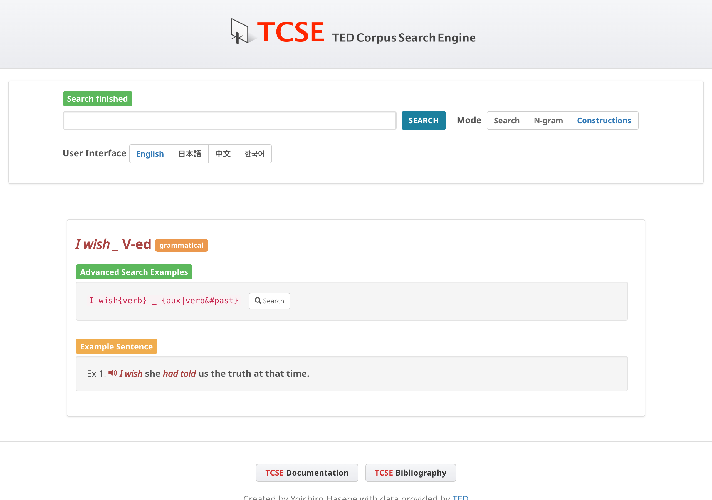
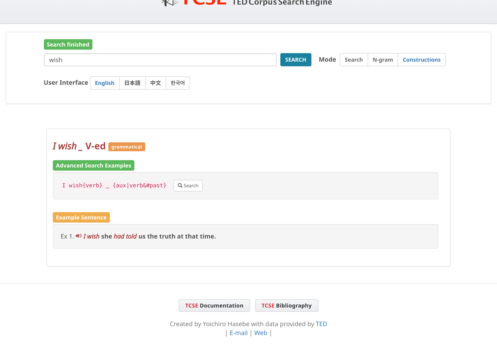

Constructions
Click on Constructions in the navigation bar to switch to Construction mode.

1,156 constructions have been collected that have multiple usage instances in the TCSE database. These constructions are organized into six categories based on Construction Grammar (Goldberg 1995, 2006), covering the continuum from fully fixed expressions to partially schematic patterns. The list is designed to be useful for learners and educators of English, as well as for linguistic research.
Category filter
Constructions are organized into six categories. Use the category filter buttons at the top to show only constructions of a specific type:
- Collocation: Verb + preposition and adjective + preposition patterns (e.g., "accuse _ of", "afraid of")
- Discourse: Discourse markers and connectors (e.g., "as a matter of fact", "as a result")
- Grammatical: Core grammatical patterns (e.g., "the more ... the more ...", "there be", comparative/superlative, passive)
- Idiom: Idiomatic expressions (e.g., "at the end of the day", "each other")
- NER Pattern: Named entity slot constructions — patterns where a specific type of named entity fills a semantic slot (e.g., "in %GPE" for place names, "%PERSON said" for person names). These patterns combine linguistic structure with named entity recognition to reveal how prepositions, verbs, and syntactic structures interact with semantic categories.
- Phrasal verb: Multi-word verbs with particles (e.g., "give up", "look into")
Text filter
Use the search box at the top to filter constructions by keyword. Type a word or phrase and press SEARCH (or Enter) to narrow the list to constructions whose description contains the text. The filter works together with the category buttons — you can select a category first and then filter within it.
The number of matching constructions is displayed in the status bar. Press CLEAR to reset the filter and show all constructions again.

Construction details
Each construction has a link for searching instances in the corpus and an example sentence. The example sentences are not from TED talks but are newly created. (Sample sentences can be freely used for non-commercial uses but the creator of TCSE retains copyright.)

Text-to-speech
Each example sentence has a speaker icon (🔊) on the left. Click it to hear the sentence read aloud using your browser's built-in speech synthesis (Web Speech API). The speech plays at a slightly reduced speed (0.85×) for clarity. Click the icon again while audio is playing to stop it.

Note
Text-to-speech availability depends on your browser and operating system. It works in most modern browsers (Chrome, Safari, Edge, Firefox) but may not be available in all environments.